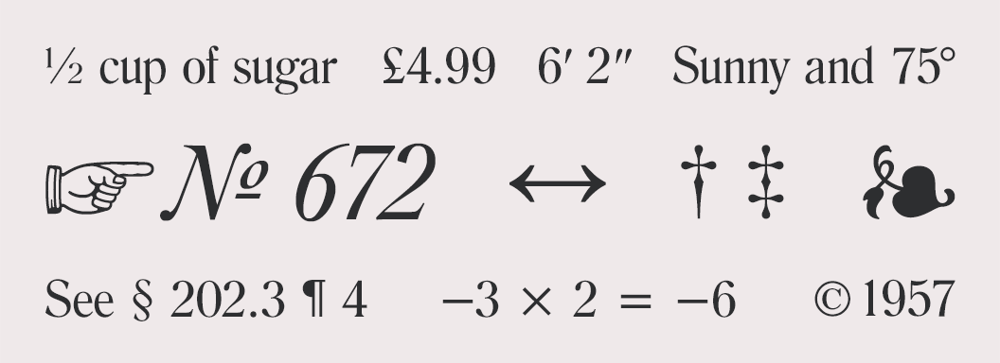

Download Printable 1-Page PDF →
Smart quotes and proper apostrophes are always curvy or sloped. Single quotes should be used inside of double quotes (in American English).
| Copy & Paste | Mac Keyboard Shortcut | Windows Keyboard Shortcut | HTML Entity |
|---|---|---|---|
| ‘ Opening Single Quote | option + ] | alt + 0 1 4 5 | ‘ |
| ’ Closing Single Quote & Apostrophe | option + shift + ] | alt + 0 1 4 6 | ’ |
| “ Opening Double Quote | option + [ | alt + 0 1 4 7 | “ |
| ” Closing Double Quote | option + shift + [ | alt + 0 1 4 8 | ” |
Smart quotes (also known as curly quotes, typographer’s quotes or proper quotation marks) are either curved or sloped. Dumb quotes (also known as straight quotes) are straight and vertical. The design of smart quotes will vary between serif and sans-serif typefaces but they will never point straight up-and-down.
Proper typography never uses straight quotes. They are known as dumb quotes and I’m guessing you don’t want to look dumb. They are left over from the age of typewriters and their only modern use is for coding.
I personally think it’s acceptable to use straight quotes when typing emails. It can be difficult to constantly type proper apostrophes (especially on a mobile device) and there is always a chance the recipient’s email client won’t display them correctly anyway.
No. Prime symbols are an entirely different punctuation mark than either straight quotes or smart quotes. They are used for measurements, such as feet and inches or minutes and seconds. See the useful typographic characters table for more info.
There is no difference — they are exactly the same character. The same rules for smart quotes apply to apostrophes as well — make sure your apostrophes are curved or sloped and not straight up-and-down.
Apostrophes should be used for contractions (I’m, you’re, ’89) and to show possession (Homer’s beer, the dog’s toy). There are also a few instances when it is correct to use an apostrophe to form a plural, such as dot your i’s and cross your t’s and yes’s and no’s. For more detailed grammar rules, see this page.
The only time it’s should have an apostrophe is when it replaces it is or it has. The possessive form of its should not contain an apostrophe, just like possessive pronouns such as hers don’t require apostrophes.
In American English, periods and commas should always go inside quotation marks. In British English, unquoted periods and commas are placed outside quotation marks. For all other punctuation, American and British English have the same rule — if the punctuation isn’t directly part of the original quotation, then it should go outside the quotation marks.
Always capitalize the first letter of a quote if the quote is a complete sentence. If the quoted material is a sentence fragment, then don’t capitalize the first letter. The exception to these two rules is if the quote is interrupted in the middle of a sentence — in that case, do not capitalize the second part of the quote.
In American English, single quotes are used for quotes inside of quotes. In British English, this is usually reversed. Newspaper headlines may also use single quotes in place of double quotes to save space.
No. Always use italics or bold for emphasis — unless you want to end up on The “Blog” of “Unnecessary” Quotation Marks.
On Windows, hold down the alt key while typing the four-digit code on your numeric keypad with num lock activated. On a Mac, press the specified keys simultaneously.
If your site uses the UTF-8 charset, then you can use the keyboard shortcuts in the table above (or just copy and paste them). Manually inputting the HTML entities works fine as well. However, a much easier solution is to set up your CMS to automatically convert your straight quotes into the correct HTML entities.
I recommend using entity names. They are easier to remember and make for clearer code. Entity numbers have slightly wider browser support, but not enough to make any meaningful difference in this day and age.
Photoshop and most word processors have a setting that will automatically convert the straight quotes you type into proper smart quotes and apostrophes.
In some typeface designs, em dashes are so wide they may be visually disruptive – some typographers, such as Robert Bringhurst, recommend using spaced en dashes instead.
| Copy & Paste | Mac Keyboard Shortcut | Windows Keyboard Shortcut | HTML Entity |
|---|---|---|---|
| – En Dash | option + - | alt + 0 1 5 0 | – |
| — Em Dash | option + shift + - | alt + 0 1 5 1 | — |
| ‒ Figure Dash | Use the Character Viewer | Use the Character Map | ‒ |
| - Hyphen-Minus | - | - | N/A |
| ‐ Hyphen | Use the Character Viewer | Use the Character Map | ‐ |
| − Minus Sign | Use the Character Viewer | Use the Character Map | − |
Em dashes can be used where parentheses might otherwise be used. They can also be used in place of a colon or when a comma is too weak but a period is too strong. An em dash is also used to show attribution of a quote, placed in front of the person’s name.
An unspaced en dash can be used in place of the word “through” when indicating a range of values, such as numbers, times and dates. For example, July 5th–9th. It’s also used to show relationships between two things, such as a Boston–London flight. An en dash with spaces can also be used in place of an em dash, depending on editorial style.
In the typographer’s bible The Elements of Typographic Style, Bringhurst recommends using en dashes surrounded by spaces, as he believes it is less visually disruptive. However, some style guides such as The Chicago Manual of Style prescribe unspaced em dashes. It’s up to you to decide which dash style you prefer — the important thing is to be consistent with your usage.
The figure dash is the same width as a digit and is used for alignment purposes when setting numbers. It shouldn’t be used to indicate a range of numbers — that is the job of the en dash — instead, it should be used for setting things such as phone numbers (555‒867‒5309). Not all fonts contain figure dashes.
The character on your keyboard next to the zero is a hyphen-minus. It’s a hybrid character from the typewriter era that represents both a hyphen and a minus sign. Technically, it shouldn’t be used in proper typography, however, it is almost universally used in place of true hyphens, especially on the web.

Many fonts contain numerous useful glyphs that are seldom used, such as №, ❧ and ☞.
| Copy & Paste | Mac Keyboard Shortcut | Windows Keyboard Shortcut | HTML Entity |
|---|---|---|---|
| ′ Prime | See prime FAQ below | alt + 8 2 4 2 | ′ |
| ″ Double Prime | See prime FAQ below | alt + 8 2 4 3 | ″ |
| † Dagger | option + t | alt + 0 1 3 4 | † |
| ‡ Double Dagger | option + shift + 7 | alt + 0 1 3 5 | ‡ |
| § Section | option + 6 | alt + 0 1 6 7 | § |
| ¶ Pilcrow/Paragraph | option + 7 | alt + 0 1 8 2 | ¶ |
| ❧ Hedera/Ivy Leaf | See hedera FAQ below | Use the Character Map | ❧ |
| № Numero | option + shift + ; Must enable U.S. Extended keyboard |
alt + 8 4 7 0 | № |
| ☞ Fist/Index/Manicule | Use the Character Viewer | Use the Character Map | ☞ |
| … Ellipsis | option + ; | alt + 0 1 3 3 | … |
| • Bullet | option + 8 | alt + 0 1 4 9 | • |
| · Middle Dot/Interpunct | option + shift + 9 | alt + 0 1 8 3 | · |
| ← Left Arrow | Use the Character Viewer | Use the Character Map | ← |
| ↑ Up Arrow | Use the Character Viewer | Use the Character Map | ↑ |
| → Right Arrow | Use the Character Viewer | Use the Character Map | → |
| ↓ Down Arrow | Use the Character Viewer | Use the Character Map | ↓ |
| ↔ Left-Right Arrow | Use the Character Viewer | Use the Character Map | ↔ |
| © Copyright | option + g | alt + 0 1 6 9 | © |
| ® Registered Trademark | option + r | alt + 0 1 7 4 | ® |
| ™ Trademark | option + 2 | alt + 0 1 5 3 | ™ |
| ¢ Cent | option + 4 | alt + 0 1 6 2 | ¢ |
| £ Pound | option + 3 | alt + 0 1 6 3 | £ |
| € Euro | option + shift + 2 | alt + 0 1 2 8 | € |
| ° Degree | option + shift + 8 | alt + 0 1 7 6 | ° |
| ½ One Half | Use the Character Viewer | alt + 0 1 8 9 | ½ |
| ± Plus/Minus Sign | option + shift + = | alt + 0 1 7 7 | ± |
| − Minus Sign | Use the Character Viewer | Use the Character Map | − |
| × Multiplication Sign | Use the Character Viewer | alt + 0 2 1 5 | × |
| ÷ Division Sign | option + / | alt + 0 2 4 7 | ÷ |
| ≈ Almost Equal | option + x | alt + 8 7 7 6 | ≈ |
| ≠ Not Equal | option + = | alt + 8 8 0 0 | ≠ |
Unfortunately there isn’t a keyboard shortcut to type prime symbols on a Mac. Be careful of keyboard shortcuts (such as option + e) that are actually for the similar acute accent character. The only sure way to get true prime marks is to either copy and paste from the table above, use the HTML entity or else insert directly using the Character Viewer. Not all fonts contain prime marks but most popular fonts do as well as quality free fonts.
The dagger symbol is used to indicate footnotes in a text. Typically, an asterisk is used for the first footnote, a dagger for the second footnote and a double dagger for the third. The dagger symbol also indicates death — when placed before or after a person’s name, it means that person is deceased.
There isn’t a keyboard shortcut for the hedera character, so to use it on a Mac you’ll need to open the Character Viewer and select the symbol under Bullets/Stars. Historically, the hedera was used to mark paragraphs, however, for modern times its use is almost entirely for ornamentation.
The fist symbol (also known as the manicule, index or pointing hand) used to be considered a standard punctuation mark and was commonly used in the twelfth through eighteenth centuries. Its primary use is to draw attention to important text. These days you may encounter it in “hipster” design.
A copyright symbol should have a space after it. Trademark and registered trademark symbols should not have a space between the text and symbol (Apple®).
HTML supports a wide range of entity names for fractions and they all follow the same format (¾ is ¾). You can also use the Character Viewer on a Mac or the Character Map on Windows to insert fractions.
If you press and hold a character on the iOS keyboard, a popup will appear showing all of the available options for that character. Slide your finger onto the popup to select the character you need.
Examples of diacritical marks such as the acute, grave, umlaut, circumflex, tilde, ring and cedilla.
| Copy & Paste | Mac Keyboard Shortcut | Windows Keyboard Shortcut | HTML Entity |
|---|---|---|---|
| à | option + ` → a | alt + 0 2 2 4 | à |
| á | option + e → a | alt + 0 2 2 5 | á |
| â | option + i → a | alt + 0 2 2 6 | â |
| ã | option + n → a | alt + 0 2 2 7 | ã |
| ä | option + u → a | alt + 0 2 2 8 | ä |
| å | option + a | alt + 0 2 2 9 | å |
| æ | option + ' | alt + 0 2 3 0 | æ |
| ç | option + c | alt + 0 2 3 1 | ç |
| è | option + ` → e | alt + 0 2 3 2 | è |
| é | option + e → e | alt + 0 2 3 3 | é |
| ê | option + i → e | alt + 0 2 3 4 | ê |
| ë | option + u → e | alt + 0 2 3 5 | ë |
| ì | option + ` → i | alt + 0 2 3 6 | ì |
| í | option + e → i | alt + 0 2 3 7 | í |
| î | option + i → i | alt + 0 2 3 8 | î |
| ï | option + u → i | alt + 0 2 3 9 | ï |
| ð | option + d | alt + 0 2 4 0 | ð |
| ñ | option + n → n | alt + 0 2 4 1 | ñ |
| ò | option + ` → o | alt + 0 2 4 2 | ò |
| ó | option + e → o | alt + 0 2 4 3 | ó |
| ô | option + i → o | alt + 0 2 4 4 | ô |
| õ | option + n → o | alt + 0 2 4 5 | õ |
| ö | option + u → o | alt + 0 2 4 6 | ö |
| ø | option + o | alt + 0 2 4 8 | ø |
| ù | option + ` → u | alt + 0 2 4 9 | ù |
| ú | option + e → u | alt + 0 2 5 0 | ú |
| û | option + i → u | alt + 0 2 5 1 | û |
| ü | option + u → u | alt + 0 2 5 2 | ü |
| ý | option + e → y | alt + 0 2 5 3 | ý |
| þ | option + t | alt + 0 2 5 4 | þ |
| ÿ | option + u → y | alt + 0 2 5 5 | ÿ |
| Π| option + Q | alt + 0 1 4 0 | Π|
| œ | option + q | alt + 0 1 5 6 | œ |
| À | option + ` → A | alt + 0 1 9 2 | À |
| Á | option + e → A | alt + 0 1 9 3 | Á |
| Â | option + i → A | alt + 0 1 9 4 | Â |
| Ã | option + n → A | alt + 0 1 9 5 | Ã |
| Ä | option + u → A | alt + 0 1 9 6 | Ä |
| Å | option + A | alt + 0 1 9 7 | Å |
| Æ | option + shift + ' | alt + 0 1 9 8 | Æ |
| Ç | option + C | alt + 0 1 9 9 | Ç |
| È | option + ` → E | alt + 0 2 0 0 | È |
| É | option + e → E | alt + 0 2 0 1 | É |
| Ê | option + i → E | alt + 0 2 0 2 | Ê |
| Ë | option + u → E | alt + 0 2 0 3 | Ë |
| Ì | option + ` → I | alt + 0 2 0 4 | Ì |
| Í | option + e → I | alt + 0 2 0 5 | Í |
| Î | option + i → I | alt + 0 2 0 6 | Î |
| Ï | option + u → I | alt + 0 2 0 7 | Ï |
| Ð | option + D | alt + 0 2 0 8 | Ð |
| Ñ | option + n → N | alt + 0 2 0 9 | Ñ |
| Ò | option + ` → O | alt + 0 2 1 0 | Ò |
| Ó | option + e → O | alt + 0 2 1 1 | Ó |
| Ô | option + i → O | alt + 0 2 1 2 | Ô |
| Õ | option + n → O | alt + 0 2 1 3 | Õ |
| Ö | option + u → O | alt + 0 2 1 4 | Ö |
| Ø | option + O | alt + 0 2 1 6 | Ø |
| Ù | option + ` → U | alt + 0 2 1 7 | Ù |
| Ú | option + e → U | alt + 0 2 1 8 | Ú |
| Û | option + i → U | alt + 0 2 1 9 | Û |
| Ü | option + u → U | alt + 0 2 2 0 | Ü |
| Ý | option + e → Y | alt + 0 2 2 1 | Ý |
| Ÿ | option + u → Y | alt + 0 3 7 6 | ÿ |
| Þ | option + T | alt + 0 2 2 2 | Þ |
| ß | option + s | alt + 0 2 2 3 | ß |
| ¡ | option + 1 | alt + 0 1 6 1 | ¡ |
| ¿ | option + ? | alt + 0 1 9 1 | ¿ |
| ‚ | option + shift + 0 | alt + 8 2 1 8 | ‚ |
| „ | option + W | alt + 8 2 2 2 | „ |
| « | option + \ | alt + 0 1 7 1 | « |
| » | option + shift + \ | alt + 0 1 8 7 | » |
| ‹ | option + shift + 3 | alt + 8 2 4 9 | ‹ |
| › | option + shift + 4 | alt + 8 2 5 0 | › |
On a PC, hold down the alt key while typing the four-digit alt code on your numeric keypad with num lock activated. On a Mac, press the specified keys simultaneously. Important: The arrow symbol (→) indicates a pause – press the keys simultaneously before the arrow and then release and then type the key after the arrow.
Yes — simply pressing and holding a letter key on the keyboard will reveal a popup showing the accented varieties of that letter. This works on iOS as well.
The letters after the arrows are case sensitive, so be sure to hold the shift key while typing the uppercase E, for example. Also double check that you are releasing the keys before you type the key after an arrow.
Some of the more exotic characters (such as the Icelandic ones) may require you to enable the U.S. Extended keyboard. Also note that not every font has full support for every possible character. You could try switching to a system font (such as Georgia, Helvetica or Arial) as they usually have fairly wide international character support.
Ensure that you are typing the backtick character (`), which is directly to the left of the number 1 on most keyboards. It looks similar to the apostrophe key, so be sure not to mix the two up.
The recommended method is to encode your site using the UTF-8 charset, then you can use the keyboard shortcuts in the table above to directly type the characters. Manually inputting the HTML entities works fine as well, however, if you have numerous accented characters then it can quickly make a mess of your source code.
Penn State’s complete guide to advanced mathematical symbols including algebra, calculus, statistics, logic and set theory.
A comprehensive currency symbols reference chart from W3Schools.
A blog (and book) that dives into the history behind typographic marks such as the pilcrow, ampersand, manicule, asterisk and dagger.
A comprehensive guide to using proper punctuation from the Purdue University Online Writing Lab.
Use the navigation on the right-hand side to learn about the history and proper use of every possible punctuation mark.
grammarist’s huge collection of words that are commonly mixed up and used improperly.
By Jeremiah Shoaf • Last updated on May 8, 2015
Corrections or suggestions: jeremiah@typewolf.com
Typewolf helps designers choose the perfect font combination for their next design project. This site is an independent typography resource that features typefaces from all type foundries.
More →
Join 20,000 other type nerds. Unsubscribe at any time with one click.